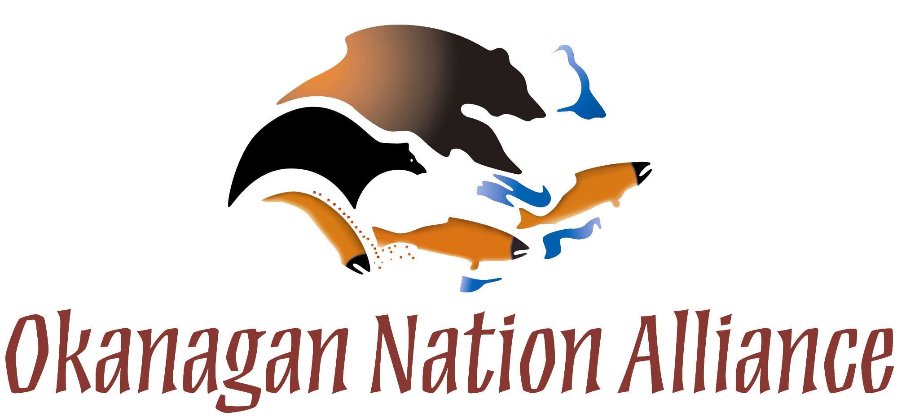

sqʷəlqʷltulaʔxʷ
Voices On The Land
Voices on The Land is an exploration - and assertion - of the Okanagan Nation's relationship with its Lands. We invite you to explore the stories and the culture that have risen from this land since time immemorial.

Click on a tour below:
Move forward in each tour by clicking |
 |